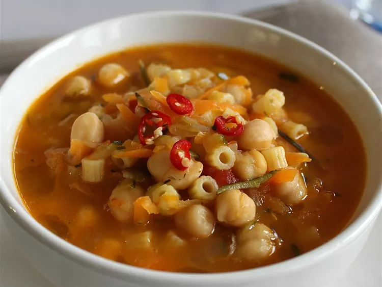

Ingredients
- 1 cup dry chickpeas
- 1 tablespoon baking soda
- 1 yellow onion
- 1 stalk celery
- 1 small zucchini
- 1 carrot
- 2 tablespoons olive oil
- 1 sprig fresh sage leaves
- 1 sprig fresh rosemary
- 1 sprig fresh thyme
- 3 cups chicken broth, or more as needed
- 2 peeled whole canned tomatoes
- 8 1/2 ounces ditalini pasta, such as Barilla® Gluten Free Ditalini
- Salt and freshly ground black pepper to taste
- 1 fresh cayenne pepper, seeded and minced, or more to taste
- 1 tablespoon extra virgin olive oil
Directions
- Rinse chickpeas under cool water. Place chickpeas in a large stew pot, cover with water, and add baking soda. Leave to soak for 8 hours or overnight.
- Pour chickpeas through a strainer and rinse well under cold running water, eliminating any skins or discolored chickpeas; set aside.
- Grate onion, celery, zucchini, and carrot. Heat olive oil in the stew pot, sauté grated vegetables, and mix in sage, rosemary, and thyme.
- Add 3 cups broth, chickpeas, and tomatoes. Bring to a boil, reduce heat, and simmer until chickpeas are tender, about 1 hour.
- Stir in pasta. Add more broth only as needed to achieve a thick, stew-like consistency.
- Cook until pasta is tender with a bite, 8 to 10 minutes. Season with salt and black pepper.
- Remove from heat and divide amongst serving bowls. Top each bowl with minced cayenne pepper and a drizzle of extra-virgin olive oil.